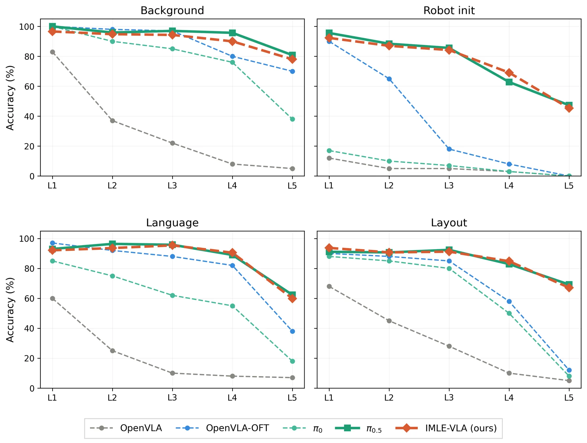
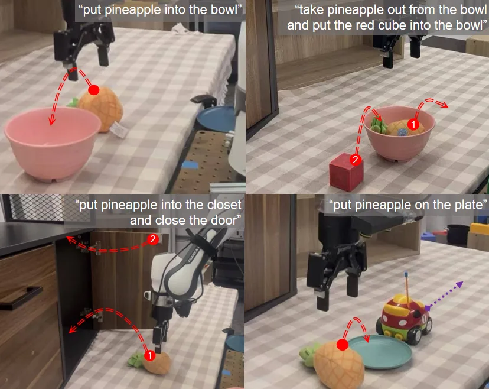

IMLE-VLA：面向视觉语言动作策略的单步动作生成
IMLE-VLA: Fast Single-Step Action Generation for Vision-Language-Action Policies
该工作把 VLA 的动作采样瓶颈压缩为单步、多模态条件生成，直接改善实时闭环执行。它对可靠空间智能的价值在于给状态估计和动作策略留下更高频的交互预算，但必须补测观测延迟、状态不确定性和安全约束下的行为。
frequency
success
jerk
time
作者、单位与技术谱系 · Research context
作者与单位
研究脉络
- diffusion/flow action heads方法基座关系：以 π0.5 等 VLA 的迭代连续动作采样作为需要降低的推理瓶颈。[论文原文]
- conditional IMLE方法上游关系：利用 cIMLE 的多模态覆盖能力替代均值回归，同时保持单步生成。[论文原文]
- IMLE-VLA本篇推进关系：将 cIMLE action head 接入 VLA，并在仿真与真实 Franka 上验证速度和成功率。[arXiv 摘要页]
合作网络
- 作者—机构Kian Hosseinkhani 等 → Simon Fraser University / University of Pennsylvania关系：论文署名单位[官方 arXiv HTML]
- π0.5 integrationIMLE-VLA action head → π0.5 VLA关系：论文明确的技术集成/比较对象[官方 arXiv HTML]
网络只记录论文署名和明确技术依赖，不推断导师/师生关系。
方法本质拆解 · What actually changed
训练改变了什么？
训练改变的是 π0.5 连接的连续 action head：用 conditional IMLE 学习单步、多模态动作生成器，而不是使用 diffusion/flow head 的迭代采样。视觉语言骨干与任务条件仍由 VLA 提供，论文重点不是训练新的几何状态估计器。
新增了什么约束？
cIMLE 的目标鼓励多个可能动作模式覆盖，避免 naive regression 的 mode collapse；它是分布覆盖约束，不是碰撞约束、可达性约束或因子图几何约束。真实部署仍需要由控制器和安全层检查动作边界。
推理时做了什么？
推理阶段将原本的多步 Euler/flow sampling 替换成一次 conditional generator forward，因此获得 55 Hz 对 15 Hz 的频率提升。论文没有在动作生成阶段运行 BA、地图更新或状态滤波；高频闭环如何消费不确定观测是后续系统问题。
方法本质是什么？
IMLE-VLA 改变的是从多模态视觉语言条件到连续动作的采样计算量与模式覆盖，而不是改变场景几何本身。它把迭代采样的时间预算转化为更高动作频率，潜在收益取决于状态估计、执行器和安全检查是否能跟上。
用 cIMLE 训练单步多模态 action head，替代迭代扩散采样，把推理预算转化为更高频的具身闭环。

桥接价值Bridge
桥接价值
IMLE-VLA 连接具身空间推理与实时控制：把原本需要多次 Euler/flow sampling 的 action head 换成单步生成，从而减少 stop-and-go movement。更高频率可以让策略更快消费视觉里程计、深度或目标位姿，但只有在观测和安全检查同样及时的情况下才会转化为可靠闭环。
方法与模块Method
方法摘要
作者在 π0.5 的视觉语言骨干上用 conditional Implicit Maximum Likelihood Estimation 训练单步 action generator，使其保持多模态 action coverage 而不是退化为均值回归。训练后每次推理只需一次动作生成，论文用 LIBERO/LIBERO-plus 和真实 Franka 任务评测速度、成功率、jerk 与 episode time。
可迁移模块
可迁移模块是 cIMLE action head、单步推理接口和多模态覆盖目标；它们可放到带显式状态估计的导航或操作策略上。工程上还应把状态协方差、观测时间戳和退化标志作为条件输入或安全门控，避免单步生成把错误状态快速放大。

证据Evidence
关键证据与数字
官方论文报告 π0.5 接入后 55 Hz vs 15 Hz、最高动作吞吐提升 11×，LIBERO 40 tasks 平均成功率 98.0%。真实 Franka 四任务中 jerk 降低 2.2×–3.0×，每回合 VLA inference time 降低 3.9×–6.6×；这些数字支持速度收益，但不是在传感器失效条件下的可靠性证据。
边界与下一步Limits & Next Step
边界与风险
单步生成可能更容易受到瞬时视觉错误、状态延迟和动作约束边界的影响；多模态覆盖也不自动等于安全可验证。论文在 LIBERO-plus 扰动下报告保持 π0.5 的鲁棒性，但仍需核验长时序累积误差、碰撞恢复、传感器丢帧和高频控制器/执行器带宽不匹配。
下一步实验
在 VLA action head 前接入带时间戳的 VIO/深度状态与协方差，按观测延迟、遮挡、尺度漂移和 OOD 物体分别扰动，记录成功率、碰撞率、恢复时间、jerk 和控制频率。比较 diffusion multi-step、IMLE single-step 和带 uncertainty gate 的 IMLE，确认速度收益是否保留且安全裕度不下降。